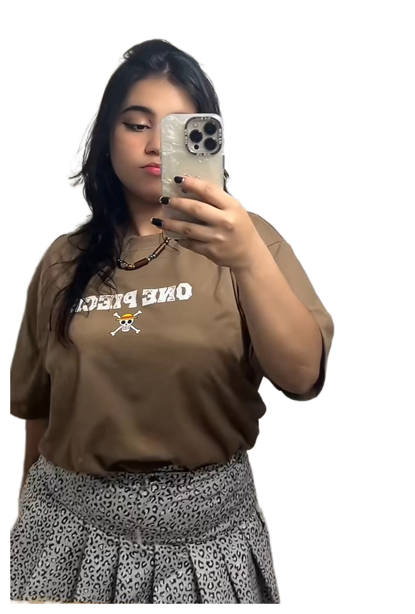

Sé que ya te lo mencioné en mensaje, pero quiero decirlo de nuevo... En verdad eres una gran mujer, nunca te olvidaré, dejaste algo muy importante en mí. Esto que hago y expreso seguramente sea muy poco para lo que realmente mereces, lastimosamente no puedo hacer un CTRL + Z para deshacer lo que hice mal, pero si puedo corregirlo y hacer mejor las cosas. Me gustaría algún día poder corregir mis errores así las cosas no puedan ser como antes. Sin más que decir, repito, eres una mujer grandiosa, lamento valorar eso de ti tan tarde, pero bueno, aún así siempre te recordaré con mucho cariño. Seguramente a medida que siga avanzando te piense así como hoy y recordaré que parte de mi avance es gracias a ti. ❤️
